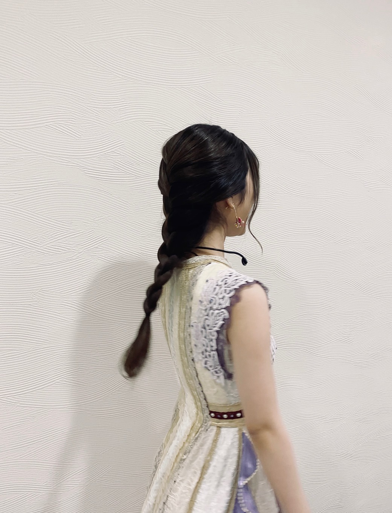

2020/1116Mon2020/11/16
少しずつではありますが
変わった日常に慣れつつあります。
でも、これから冬が本番です。
コロナは勿論
インフルエンザなどにも気をつけて
お過ごし下さいね。！
寒いけど換気をしたり
手払いうがいはマストです。
適度な保湿加湿も大切ですねー。！
ミーグリありがとうございました。
今年もしかしたら最後かもと言う事もあり
より、心温まる声を沢山掛けてもらえて
心から幸せな気分にもなりましたし
泣きそうになるくらい
愛されてるなと感じる事もありました。
実はモバメでもお話しさせて貰ったのですが
友達や家族に私のファンの人はいい人が多すぎる気がすると自慢することがあるんです。
友達は他のアイドルさんが好きなのですが
蘭世のファンは幸せ者だなっと言っていました、、、！！
少し脱線話ではありますが
妹は写真のセンスがいいから
アプリのアイコンとか
待ち受け写真に使いやすいからいいねと
なんともファン目線で冷静に褒めてくれたりと、、、
幸せに形は無くて
何をもって幸せと
感じるかは人それぞれではありますが
こんな素敵で綺麗な言葉がさらさらと出てくる
友人を持つことが出来たり
そんな素敵な家族のところに生まれてきたり
このアイドルという仕事をして
沢山の人と会う機会を得て
その中でもいい人達ばかりに出会えて
これは全て
自分らしく生きてきた証だと思いました。
今年は色んなことがある年ではありましたが
そんな時に振り返ってみたり
未来を想像してみても
私の周りはいつもキラキラしたもので溢れていました。
歩んできた道も
これから歩みたい道も
歩んできた道を信じて
そして大切に優しく包んでいきたいです。
そして、これから歩みたい道も
想像よるも輝けるように
いきたいです。
そしてそして、長くなり申し訳ないのですが
ananさん
arさん
Instagramを始めてから
こうしてファッション誌に載せてもらえると
より、嬉しく感じました。✨
どちらも素敵に撮っていただきました。✨
掛橋ちゃんブログありがとう。
ブログ読んだよー。
EX大衆さん
連載ページの出演ですが
ソロでインタビューさせて貰ってます。
私のプライベートな写真やまだ見せたことのない
お宝写真も公開してみた、、、！
久々に宝塚歌劇団さんについて話したのですが
うう、、、！
是非、チェックしてくださいね！
月刊ニュータイプさん
今年もこの季節がやってきました。✨
毎年有難いなーと噛み締めつつ
皆さんは今年特に好きだったアニメありますか？！
良かったらコメントでも教えて下さいね。
乃木坂新聞さん
NEWSがとまらんぜが最終回を迎えました。
コラムについての記事を載せていただいてます。
是非、チェックしてください。
そして、ここ数日撮影だったり収録だったり
色々楽しい事がありましたー。✨
是非、追って公式サイトもチェックしてて下さいね。✨
紅白ありがとうございます。✨
大切に大切に
こんなご時世ですが
いや、こんな時だからこそ
少しでも楽しんでもらえるように
私も楽しめたらいいなーと思います。
最近の私です。




コメント(727)
今日は授業が午後からだから
スロースタートっ
お兄ちゃんとグリンチ見てるの〜！
起きてから今日は何書こうかなー？なんて考えていたけど
11月も最後だからいい一日にしたいな！と思ったり！
新しいブログもInstagramもメールも待ってるからね〜！
ノリ気になったらやってよねー！
心が元気じゃないと
流行病にもかかりやすくなっちゃうから
アガるようなことしてね〜
美味しいもの食べて暖かくして過ごすんだよー！！
ではでは
また遊びに来るねー！
無事にスマホが新しいものに変わりました～画面おっきめ！サクサク動くぞー♪ヽ(´▽｀)/
これでもしミーグリが来ても大丈夫(o^-')b !
ではでは寒くなってきたけど身体に気をつけて、
また来ます(*・д・)ﾉ
ゆうたーん より
アンダーライブ開催の決定おめでとうございます。
このご時世での観客有りで開催する事は不安もありますが蘭世さんが楽しんでくれたらそれで良いなと思います！
自分は今回は配信ですがライブ楽しみにしてますね〜
コロナが完璧に収まって何事も不安なく楽しめるようになったらまたライブにいきますね。
今回はライブ会場でタオルやサイリウムを持って蘭世さんに見てもらう事は出来ませんがこうやってコメントして少しでも蘭世さんを応援出来たらなと思います。
インスタも見ましたよ〜
蘭世さんから未央奈さんへの今の思いを改めて聞けて良かったです。
これからの活動の中で未央奈さんとの思い出をたくさん増やして欲しいと思ってます！
ずっと大好きですよ！
これからも応援していきます。
やぁ
お疲れ様～
また反映されない症に入ったかも笑笑
何個かメールの返事が反映されてないな…
てか今夜は満月やでビーバームーンって言うんやって。
さらに「半影月食」も観れる可能性があるんやって。
こういうのなんかワクワクするよな
今日はね早めに帰宅したからのんびりしようと思う。
でもな…帰って来て玄関で足の指を打ち付けた…
思わず爪割れたかと思った。
前に一回これで親指の爪が半分はがれたからな…
痛くて焦ったわ。
蘭世
それじゃきっとまた後で。
やぁ
メ―ルありがとう！
昨日も撮影やったんや。
年末を感じる撮影やったんやな
おお！！本日も！！！
明日から師走だからな～もっと感じる事が出来てくるだろうな
Liveもあるね～。
徐々にコロナ過でも忙しくなってくるだろうから、油断せずに健康安全第一でな！
今日は純奈ちゃんの誕生日なんやな。
おめでとうやな！！
お誕生日おめでと～純奈ちゃん！
わ～いヾ(≧▽≦)ﾉわ～いヾ(≧▽≦)ﾉ
きっとまた後で(｡･ω･)ﾉﾞ
やぁ
27日未反映分
メールありがとう！
今日は寒いよな。
でも12月になろうとしてる中ではまだ暖かいかも。
俺も家では半袖でいるからな
外に出て原付とか乗らなかったらトレーナーとTシャツで十分
こちらこそいつも更新してくれてありがとう！
新しいのも観てコメントブログにしてるからな
へ～ああいう感じの柄好き。
シャツとか作りたいと思うぐらい
まぁそうしたらバーバリーみたいな感じになるのか…笑
そうやね。
プレゼントとかは大変だろうからLive配信が現実的なのかもしれへんね
楽しみ。
提案するのは自由だしタダだからどんどんするのはええよな。
後は事務所との話試合だけど笑笑
俺も運営さんに問い合わせして提案しようかな
こちらこそ何卒～！
蘭世
お互いに大切にしていこうな
それもお互いに楽しんで大事にして続けていこう！
何より楽しむことが大事！！！
ちゃんと心は傍にいますからな！
28日未反映分
メ―ルありがとう！
せやねしっかりと栄養とってしっかりと睡眠もとって。
寝れない日も疲れ切って寝れる日もある。
今は自分の体調を第一に考えて。
そしてゆっくりでもいい無理なく自分を立たせて前に歩けばいい。
安全健康第一。
それが大事。
後は小さな幸せを見つけてクスッて感じでもいいから笑えるようになればまた笑顔になれる
てかアンダラ開催がけってしたな。
手放しでは喜べないのが事実。
不安が沢山ある。
ただでさえ感染者が増えてる中での開催。
正直無観客でやった方が良いのではとさえ思ってる。
今はただただ蘭世
29日未反映分
やぁ
メールありがとう！
アンダラ決まったな。
嬉しさもあるけど、やはり不安と心配の方が大きい。
安全性はどうなのか無症状の人には対応できるのかとか潜伏期の人に対してはとかそういう分からないとこの対策は出来てるのかとか素人だからこそ分からないことだっらけで心配になるよな。
でも止まってもいられないのも分かる。
綺麗ごとなく言えば応援はするだけど、不安心配もあるという事は分かって欲しい。
会場に行かれるファンはガイドラインをしっかり守って行動してほしいな。
正直これ以上感染が広まらない事を願うなら有客はまだ早い気もする。
ブレてるけど可愛さがハンパなく伝わってくる。
てか最近その口よくやるよな笑
どうした？
好きだからええねんけど
お！これは珍しい角度！
やっぱ新制服似合ってる。
綺麗やで蘭世
きっとまた後で(｡･ω･)ﾉﾞ
今日も1日お疲れさまでした
撮影お疲れさま
もう年末だよね
なんなら年始の撮影もしてるんじゃない？
11月もあっという間に終わったから
もうあっという間に来年になりそうだね
ライブがんばってね
初センターのたまちゃん助けてあげてね
おやすみー
今日も沢山のメールを送ってくれて有難う！
連日の撮影のお仕事本当にお疲れ様:)
年末でいつも忙しくなっているとは思いますが体調管理には気をつけてねー
今日は純奈ちゃんのお誕生日ですね！
蘭世ちゃんとは同期で同い歳だからいつも以上に特別な感じがあると思います。
明日まだ忙しい1日になると思いますがお互いがんばろうねー
メールありがとう。
昨日今日と撮影お疲れ様でした！
どんなものか楽しみにしてます〜☺️
明日からはもう12月だもんね。
年末に向けて、楽しみつつ頑張りましょう！
純奈ちゃんお誕生日おめでとうだー✨
個人的にもメッセージとか送ったんかな？？
そういえば、この前伊織ちゃんのお誕生日に動画送ったんだってね！
インスタも見たよ〜！！
うさぎさん可愛かった♡
11月もあっという間に過ぎて、、、
12月になると一気にクリスマス感増しますよね！
ワクワク✨
明日も良い1日になりますように！
(*・ｪ･*)ﾉ～☆ｺﾝﾊﾞﾝﾜ♪最愛なる蘭世
おかえり、今日も一日お疲れさま！！
今日は満月が凄く綺麗やな。
インスタのストーリー観たで。
無表情のウサギさんが居たな
もうギュッてしたくなるほど愛おしいわ。
今日は帰って来てからのんびりしすぎた笑
ついさっきまで寝落ちしてた
で今から又寝るんですけどな
ちゃんと乾燥対策もしないとカサカサになってしまう
蘭世
てかやっぱ未反映があるんよな…まぁ重複したらすまんという事で許してな。
それじゃ今日はこの辺で。
おやすみ蘭世
きっとまた明日も笑顔で(｡･ω･)ﾉﾞ
こんばんは！
本日もお疲れ様です！
モバメありがとうです！
撮影お疲れ様です！！
一つ一つやっていきましょう！
自分もそうします！
明日も頑張りましょう！！(^-^)v
えいえいおー！！
誕生日まで298日！！
ぜーの勢い…
とまらんぜーーー！！！
No.750
忙しくてこんな時間になっちゃったや〜！
メール見たよ〜！
蘭世さんも撮影やライブの準備でバタバタしているのね！
Instagramありがとうねー！めちゃ可愛かった！
真顔なのがじわじわくるけど
笑顔が見たいやね〜笑笑
明日も素敵な一日になりますように！
いつでもらんぜさんの味方だからねー！
ほんとだよー？
寒いし乾燥してるから
暖かくして加湿したりして寝るんだよ〜！
ではではおやすみなさい！
また遊びに来るねー！
撮影お疲れ様です！
年末を感じたって事はクリスマスとか関係ですかね？
純奈さんおめでとうですね！
特にライブの時の純奈さんの歌声とても好きで、今度のアンダラでも純奈さんがソロで歌う事を期待しています！
ずっと大好きですよ！
これからも応援していきます。
ユンです(^^)
今日も楽しんでる？
韓国はもうものすごく寒くなってきて大変なのよー
もう毎日外に出るのが怖い！
コロナも急に広がり始めたから外出も控えめにしないとね
そして今日もメール本当にありがとう！
撮影多くて嬉しい！！
年末だから着物とかも見れたりするのかな
冬服は冬服なりの良さがあるからねー
楽しみにしてる！
そしてじゅんなちゃんの誕生日もおめでとうだ！
２期生みんな本当に色んなところで頑張ってるからね
堀さんの卒業も本当にまだ実感がないな、、
最後まで笑顔で楽しく過ごしてね！
そしてアンダーライブも楽しみ！！
アンダーライブできるようになって本当に嬉しいよ
こんなご時世だから、正直心配してたのよ
しかもライブ配信もあるから、生で見れることも嬉しすぎる！
今年、あんま良いことはなかったけど、ライブで年末を楽しもうね！
では、今日はこれで。
また！！
ユン
11/30のメールのお返事です！
〇1通目
撮影だったんですね！
年末系の何かかな？
今日も撮影！！
色々報告ありがとうございます☺️
大変だとは思いますが、身体に気をつけて頑張ってくださいね。
〇2通目
純奈の誕生日だね！
おめでたい：）
以上です！
ついに今年もあと1ヶ月！
あっという間だったな。
年末だしバタバタするとは思いますが、体調をくずされませんよう元気に過ごしてくださいね！
あと1ヶ月、楽しむぞ！！：）
それでは！
悠人⊿
モバメとインスタストーリーありがとう。
うさぎ蘭世可愛かった
昨夜満月やったからうさぎ？違うか
純奈お誕生日おめでとうやったね。
未央奈卒業するまでに2期生でのお仕事が1つでも多く増える様に祈ってるよ。
アンダラに向けて体調崩さない様に、ケガしない様にね。
今日も蘭世にとってハッピーな1日であります様に
いよいよ12月やね〜！ 今年もラスト1ヶ月
どんな1年だったかな〜？
レコ大や紅白の出演を楽しみにしつつ
まずはアンダーライブといったところでしょう！
この1ヶ月はとっても濃いものにしたいですね！
想いでいっぱい作れるように。
今日もはりきっていこう
ではではまた遊びに来るねー！
今朝も冷えるねー。
暖かくして、年末に向けて
体調崩さない様にお互い気をつけよう！
自分はコートを買わないと、、です。笑
まだ火曜日、
今週も引き続きがんばろうねー。
オレンジ
おはよう
今日も蘭世
今日から12月！
今年も残すとこ1ヶ月。
こんなご時世だけども大切に過ごしていこうな
あ、そろそろクリスマスカードを選ばないとな
毎年蘭世
さてとそれじゃ今日も沢山の笑顔になれるように過ごそうな
今日も出会う方々や頂けるお仕事に感謝して初心を忘れずに楽しんで笑顔で居られる日にしよう。
産んで育ててくれた御両親にも常に感謝を…
じゃきっとまた後で(´▽｀)
いってらっしゃい！
やぁ
やっと未反映になってたのも反映してた。
メールありがとう！
俺もたっぷり寝たい
でもショートスリーパーだからな…
たまにめちゃくちゃ寝る時もあるけどな笑
俺も小学校の頃からずっと夜更かしさんやったわ。
自分の部屋があったから余計にやろうな笑
今日も沢山笑おうな！
きっとまた後で(｡･ω･)ﾉﾞ
もう12月！早いねーー
楽しいこと、嬉しいこと、不安なこと、色々あるよねー
一緒に頑張ろう！！
やぁ
メールありがとう！
ブログ更新してくれるのか嬉しいわ。
ありがおう
新しい事？？
何だろう？
事務所的にもOKな事だたら挑戦してもええかもな
まだ具体的に決まってなさそうやけど( *´艸｀)
基礎や過去を大事に出来ない人は新しい事をしても成功しないからね。
何でもそうだと思うけど基礎はすごく大事そこから自分のやり方を見つけていく。
何作ろうか～！
こっちもワクワクしてくるやん
こっちも話せて嬉しいで。
メ―ルもブログもインスタも3150！！
きっとまた後で(｡･ω･)ﾉﾞ
滑走路流れたよ！
嬉しいよー！
11/30のメールのお返事です！
〇1通目
撮影だったんですね！
年末系の何かかな？
今日も撮影！！
色々報告ありがとうございます☺️
大変だとは思いますが、身体に気をつけて頑張ってくださいね。
〇2通目
純奈の誕生日だね！
おめでたい：）
以上です！
ついに今年もあと1ヶ月！
あっという間だったな。
年末だしバタバタするとは思いますが、体調をくずされませんよう元気に過ごしてくださいね！
あと1ヶ月、楽しむぞ！！：）
それでは！
悠人⊿


ゆる巻き♡寺田蘭世殿きゃわわうれぴーぽーo(￣◎￣)o ﾊﾞﾌﾞｩ♡
乃木坂工事中!トニカクカワイイお声選手権‼ぷらーばですわおほほほほ(o^∀^)
少し角度♡のあるらんらんお綺麗やわぁ[壁]ｴ＿)逆ﾁﾗﾘ♡